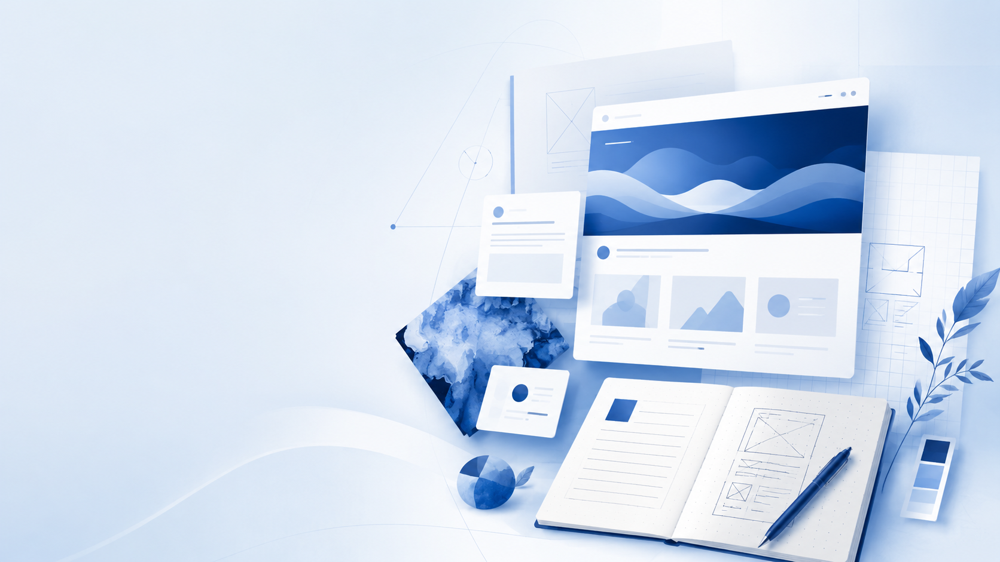
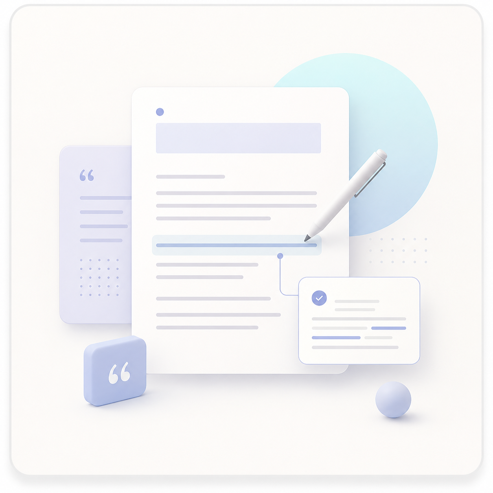
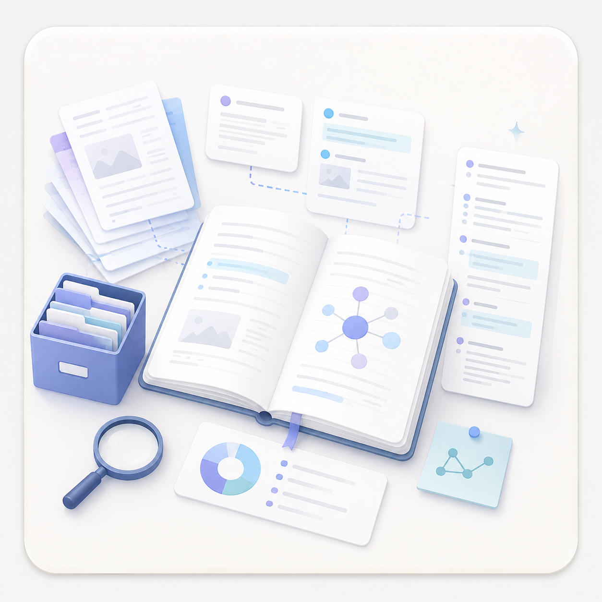
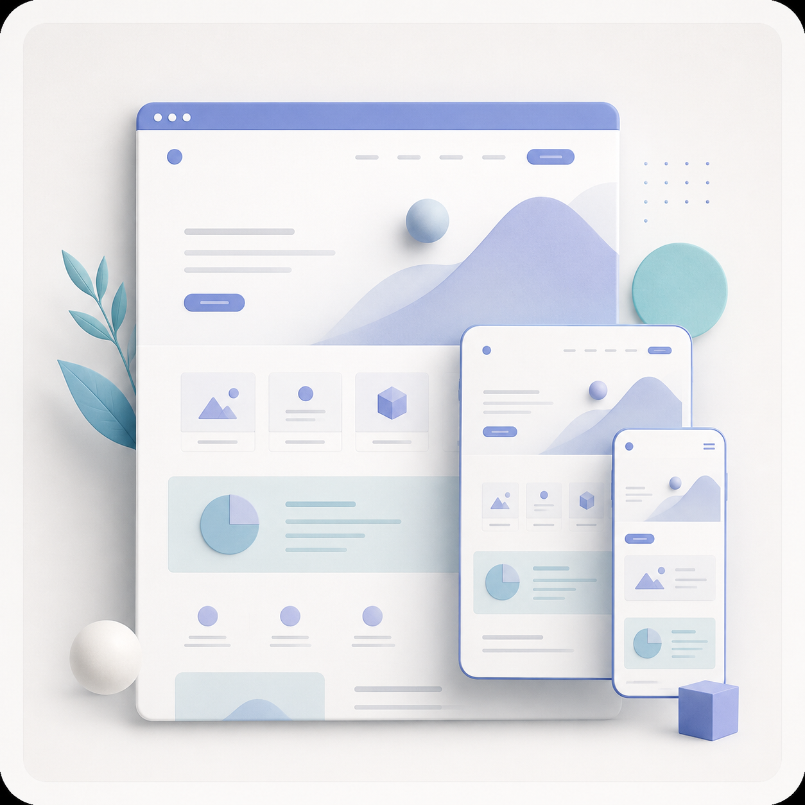
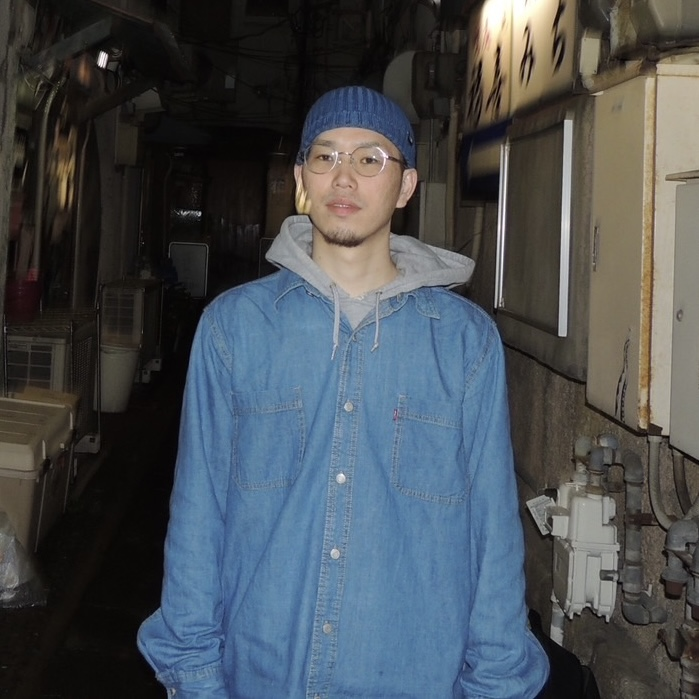

- 原稿は依頼者側で用意する前提になる
- デザインは良いが、何を頼めるかが弱い
- AIで整えた文章が自分の言葉に見えない
- 制作会社に頼むには予算や規模が合わない

COPYWRITING / BRAND LANGUAGE / WEB & LP
言葉から整え、
伝わる形へ。
コピーライティング、ブランド言語設計、Web・LP制作まで。
活動やサービスの魅力を整理し、信頼につながる形へ整えます。
Diagnosis
作る前に、伝わらない原因を切り分けます。
見た目だけ整えても、言葉と導線が曖昧なままだと問い合わせにはつながりません。
- サービスの魅力を、うまく言葉にできない
- 何をWebサイトに載せればよいかわからない
- 文章、デザイン、実装を別々に頼むのが大変
- 自分らしさは残しながら、仕事として信頼される形にしたい
- AIで文章を作ってみたが、しっくりこない
- SNSだけでは情報が流れ、活動の全体像が伝わりにくい
After
制作後に整えるもの
- 価値を言語化する
- 伝える順番を設計する
- 信頼される見た目へ整える
- 公開できるWebへ落とし込む
Why Kai Creative Works
分業ではこぼれやすい「言葉の前工程」から担当します。
Web制作、コピー制作、AI活用を別々に考えず、問い合わせにつながる順番に組み直します。
- ヒアリングから強みと提供価値を整理する
- コピー、構成、デザイン、実装を一つの流れで設計する
- AIは補助に使い、表現判断は人が行う
- 小さく始められる1ページLPとして公開する
Services
主力サービス
言葉の整理からWebとして公開するところまで、必要な範囲に合わせて対応します。

コピー・ブランド言語設計
サービスの核を見つけ、選ばれる理由を自分の言葉で説明できる状態へ整えます。
こんな方へ 強みや発信の軸を整理したい方。
成果物 キャッチコピー、ボディコピー、ブランドステートメント、MVV。
- ヒアリング
- サービスの価値整理
- コピー案・意図説明・修正

LP・Webページ制作
伝える順番からコピー、デザイン、実装までをつなぎ、公開できるページへ仕上げます。
こんな方へ 原稿や構成が未整理な段階から相談したい方。
成果物 ページ構成、コピー、デザイン、レスポンシブ対応の1ページサイト。
- ヒアリング・情報設計
- コピー・デザイン
- 実装・公開前確認

発信設計・実績整理
実績や発信テーマを整理し、媒体をまたいで一貫して伝わる導線を作ります。
こんな方へ 活動内容が散らばり、発信の優先順位に迷っている方。
成果物 実績の整理軸、プロフィール文、発信テーマ、SNS・note導線案。
- 活動・実績の棚卸し
- 発信テーマ・プロフィール整理
- 媒体ごとの導線設計
料金の目安は、下部の料金セクションにまとめています。
Other Production
その他の制作
Webやブランド制作に付随するクリエイティブについても、内容に応じてご相談いただけます。
- フライヤー・ポスター
- SNS画像
- YouTubeサムネイル
- 動画編集
- 簡易BGM制作
内容に応じて都度お見積もり
Strengths
選ばれる理由
言葉が決まっていなくても相談できる
ヒアリングを通して、サービスの特徴や大切にしていることを整理します。原稿を完成させてから依頼する必要はありません。
コピー、構成、デザイン、実装までつながる
文章だけ、見た目だけで分断せず、Web上でどう伝わるかまで一つの流れで考えます。
一人の担当者が最後まで対応する
ヒアリングから公開まで担当者が変わらないため、意図や世界観がぶれにくく、やり取りもシンプルです。
AIを補助に使い、判断は人が行う
情報整理や実装補助にはAIを活用しながら、コンセプト、コピーの選定、修正、最終確認は本人が責任を持って行います。
Works
制作実績
見た目だけでなく、課題、担当範囲、考えたこと、確認できる結果を整理しています。
活動紹介、依頼導線、SNSリンクを1ページに整理。公開後、このLPを見た別事業者からWeb制作相談につながりました。
イベント現場でスマホから使えるWebアプリとして、企画、仕様、UI、実装、公開まで担当。
課題、提案コピー、意図を整理。公開前に掲載許可が必要な案件は管理用クラスで区別しています。
NENE LP
- Profile LP
- Dance
- Responsive
- Copy / Design / Web
ダンサー / イベント主催者向け活動紹介LP
NENE LP
課題
SNSでは活動の雰囲気は伝わる一方で、初めて知った人がプロフィール、実績、依頼内容を一覧で確認できる場所が必要でした。
提案
プロフィール、活動内容、実績、依頼導線、SNS・動画リンクを1ページに整理し、スマートフォンでも読みやすいLPとして設計しました。
担当範囲
企画・設計
コンテンツ
デザイン・実装
公開・運用
成果
公開後、このLPを見た別の事業者から、Webサイト制作の相談につながりました。
制作で重視した点
初めて見た人が、活動内容、依頼できること、連絡先まで迷わず確認できる構成を重視しました。
コピー・ブランド言語設計実績
河村醤油
- 課題
- 長く続く醤油メーカーの歴史と、食卓に届けたい価値を言葉として整理すること。
- 担当
- キャッチコピー / ブランドステートメント / 思想整理 / EC展開を見据えた言語設計
- 提案コピー
- 100年以上続く歴史と、食卓や人の笑顔を広げたい思いが伝わる言葉へ整理。
- 意図
- 伝統だけで終わらせず、日々の食卓にどう関わるブランドなのかを伝えることを重視しました。
こっこ
- 課題
- 命、育てる人の思い、経営理念、消費者への価値を一つの文脈に整理すること。
- 担当
- キャッチコピー / ステートメント / ブランド理念 / 商品訴求
- 提案コピー
- 作り手の姿勢と、商品を受け取る人への価値がつながる言葉へ整理。
- 意図
- 商品の説明だけでなく、背景にある考え方まで伝わるように構成しました。
eachvista
- 課題
- 経営者の思想、価値観、将来像を、社内外に伝わる言葉へ整えること。
- 担当
- ヒアリング / タグライン / ミッション / ビジョン / バリュー
- 提案コピー
- 運命共走体。 / 共走しよう、絶景まで。 / 回答者ではなく、開拓者になる。
- 意図
- 答えを渡す関係ではなく、事業の未来へ一緒に進む姿勢が伝わる言葉を重視しました。
カーハピネス
- 課題
- 山陰エリアで廃車買取を検討する人に、地域性と直接買取の強みを伝えること。
- 担当
- 競合分析 / ターゲット整理 / ファーストビュー / セールスコピー
- 提案コピー
- 地域の利用者が安心して相談できるよう、直接買取の強みを前面に整理。
- 意図
- 価格訴求だけに寄せず、地域で相談しやすい企業として見える導線を意識しました。
VINGO
- Web App
- Event Tool
- Mobile First
- UI / Web
自主制作 / イベント向けスマホWebアプリ
VINGO
課題
イベント中の参加感を高めるため、紙を配らず、スマートフォンでその場で遊べる仕組みを検討しました。
提案
3×3ビンゴWebアプリとして、ランダム生成、確定、セルタップ、ビンゴ演出、タイムスタンプ表示などを設計しました。
担当範囲
企画・設計
UI・実装
検証・公開
工夫
イベント現場で迷わず使えるよう、スマートフォンを優先したシンプルな操作性を重視しました。
AI Policy
AIは補助として活用します。
制作工程では、情報整理・構成補助・実装補助などにAIツールを活用しています。
企画、表現判断、コピーの選定、修正、最終確認は、制作者本人が行います。
AI活用方針に懸念がある場合は、事前にご相談ください。
クライアントからお預かりした機密情報・個人情報は、事前の確認なく外部AIサービスへ入力しません。
About
コピーライターから、言葉とWebをつなぐ制作者へ。

Kai Creative Worksは、言葉を起点にコピー、ブランド言語、Web・LPの伝わり方を整える個人クリエイターです。
まだ言葉になっていない思いや魅力をヒアリングで整理し、誰に、何を、どの順番で届けるかを設計します。文章だけ、見た目だけで終わらせず、必要に応じて公開できるWebまでつなげます。
AIは情報整理や実装の補助として活用しますが、企画、構成、コピー、表現の調整、最終判断は本人が行います。オンラインを中心に、未整理な段階から相談できます。
- 文章からサービスの価値と伝える順番を整理
- 言葉と見せ方を一つの設計としてつなぐ
- コピーから1ページWebの実装まで一貫対応
- 本人が最後まで判断・調整し、オンラインで全国対応
Process
制作の流れ
最初から発注を決めていなくても問題ありません。内容整理と見積もりを確認してから進めます。
-
01相談・状況整理
目的、現状、困っていること、参考イメージを確認します。原稿がなくても相談できます。
-
02範囲設計・見積もり
必要な制作範囲、料金、納期、修正回数を整理し、事前に見積もりをご案内します。
-
03コピー・構成・デザイン制作
誰に何をどの順番で伝えるかを決め、文章と見た目を一体で作ります。
-
04実装・確認・公開
スマホ表示、リンク、フォーム、文章を確認し、公開または納品できる状態に整えます。
Price
料金の目安
必要な範囲を選びやすいよう、単品メニューとセットに分けています。
単品メニュー
キャッチコピー作成
20,000円キャッチコピー10案と、方向性を合わせる修正1回を含みます。
ボディコピー作成
30,000円サービスの価値や背景を、読み手に伝わる本文へ整理します。
MVV作成
30,000円Mission・Vision・Valueを、活動の判断軸として使える言葉へ整えます。
LP / HPライティング
30,000円ページ構成に沿って、見出し・本文・CTAなどの原稿を作成します。
セット
※内容・ボリューム・素材の有無・実装範囲に応じてお見積もりします。
※迷う場合は、フォームで「まだ決まっていない」を選んでください。必要な範囲から一緒に整理します。
FAQ
よくある質問
文章がまとまっていなくても依頼できますか？
はい。断片的なメモや箇条書きからでも、ヒアリングを通して必要な情報と伝える順番を整理します。
まだ内容が固まっていなくても相談できますか？
はい。目的や現状を伺い、必要な制作物と優先順位から一緒に整理します。
イベントや個人活動のLPも作れますか？
はい。イベント告知、活動紹介、ポートフォリオ、サービス紹介など、小規模な1ページLPを中心に対応しています。
料金はどのように決まりますか？
制作内容、文章量、素材の有無、ページ数、実装範囲を確認し、着手前にお見積もりをご案内します。
AIツールを使って制作していますか？
情報整理や構成・実装の補助として必要に応じて活用します。企画、表現判断、コピーの選定、修正、最終確認は制作者本人が行います。
機密情報や個人情報はAIに入力されますか？
クライアントからお預かりした機密情報や個人情報を、事前確認なく外部AIサービスへ入力することはありません。
どこまで相談できますか？
言葉の整理、コピー、構成、デザイン、HTML・CSS・JavaScriptによる実装、公開前確認まで、必要な範囲に合わせて対応します。
SNSやnoteへの展開も相談できますか？
はい。LPやブランドの軸をもとに、SNS投稿やnoteへ展開するためのテーマ、見出し、導線整理をご相談いただけます。
Contact
まだ整理できていない段階から、ご相談ください。
今の悩みは、箇条書きでも大丈夫です。
まだ整理できていない段階でもご相談ください。何を載せるべきか、どんな言葉が合うか、一緒に整理します。通常2〜3営業日以内を目安にご返信します。
※制作工程では、内容に応じてAIツールを活用します。企画・表現判断・修正・最終確認は制作者本人が行います。
- 必須項目は、お名前・メール・希望サービス・相談内容・同意チェックです。
- 予算や時期が未定でも送信できます。
- 制作範囲と費用は、内容確認後に事前見積もりでご案内します。